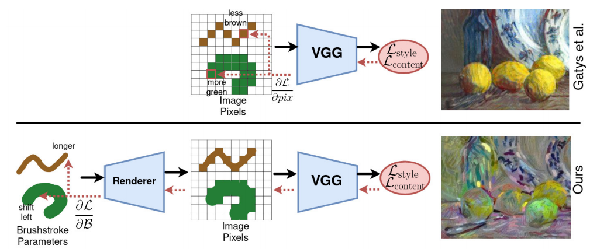

Matthias Wright
About Me
I am a PhD student in the Computer Vision Group at Heidelberg University.
I am work on generative deep learning, specifically image synthesis and neural style transfer.
I am work on generative deep learning, specifically image synthesis and neural style transfer.
Publications
* denotes equal contribution

Education
Dec 2019 - Present
Heidelberg University, Germany
Ph.D. Student in Computer Science (Computer Vision / Deep Learning)
Computer Vision Group, Heidelberg Collaboratory for Image Processing
Advisor: Prof. Björn Ommer
Ph.D. Student in Computer Science (Computer Vision / Deep Learning)
Computer Vision Group, Heidelberg Collaboratory for Image Processing
Advisor: Prof. Björn Ommer
Oct 2018 - Sep 2019
University of Bath, United Kingdom
M.Sc. in Computer Science
Area: Machine Learning and Autonomous Systems
Thesis: A Siamese Architecture for Neural Style Transfer
M.Sc. in Computer Science
Area: Machine Learning and Autonomous Systems
Thesis: A Siamese Architecture for Neural Style Transfer
Sep 2015 - Aug 2018
Aachen University of Applied Sciences, Germany
B.Sc. in Applied Mathematics and Computer Science
Thesis: Detecting Abnormalities in Clinical Data with GANs
B.Sc. in Applied Mathematics and Computer Science
Thesis: Detecting Abnormalities in Clinical Data with GANs
Experience
Apr 2020 - Present
Heidelberg University, Germany
Teaching Assistant
Teaching Assistant
Sep 2015 - Aug 2018
RWTH Aachen University, Germany
Software Developer
Software Developer